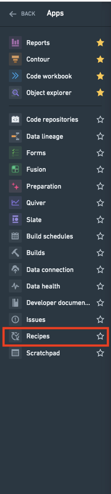
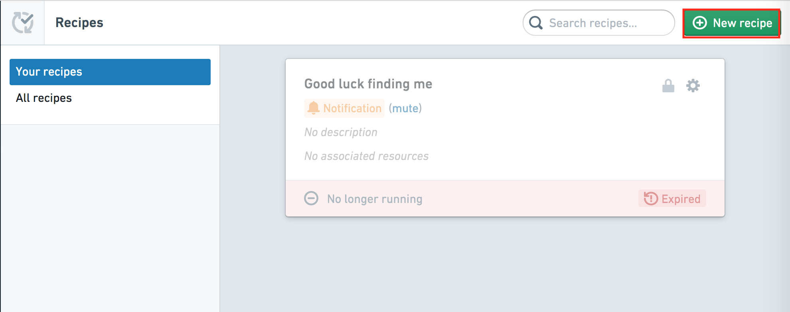
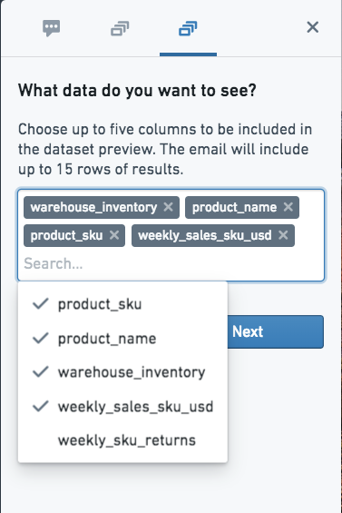
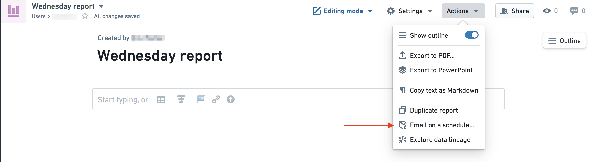
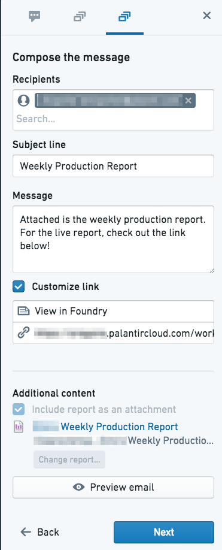
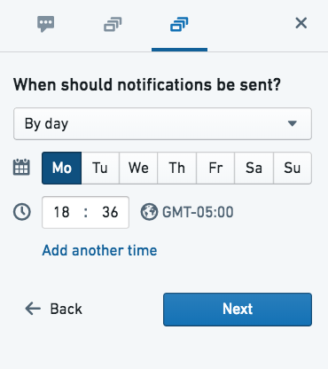

There are many ways to create a recipe in Foundry. Use this guide to learn how to create a recipe from the Recipes application, Dataset Preview, and Quiver.
Open the Recipes application from the navigation sidebar.

Click New Recipe in the top right of the interface.

You will then be directed to choose a resource to monitor through the recipe.
To create a new recipe from the Dataset Preview application, select Create a recipe in the Actions menu.
Recipes allow you to send a preview of the dataset by defining the following:
:::callout{theme="neutral"} A maximum of five columns can be sent in a preview. :::

A report can be automated to send out on a schedule to specified recipients as either an attached PDF or an in-email image.
From the Reports Actions menu, select Email on a schedule.

Then, compose a message to send with the preview.

Finally, schedule the email. Select the days on which the report will send. Note that the time zone will default to the recipe creator's local system time zone.
